Overview of Microsoft Student Partners 2017
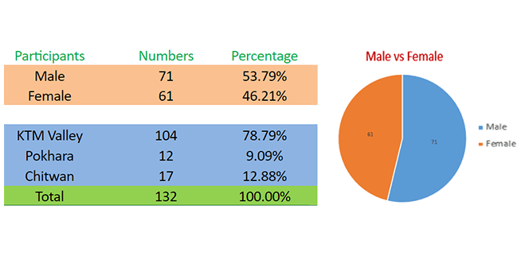
Compared to the past years, the female’s participation has become near or equal strong compared to male (46 % female Participants). The MSPs were selected the MSP Orientation participants from more than 600 + participants from various college.
Like Always, It begins with National Anthem – Springboard
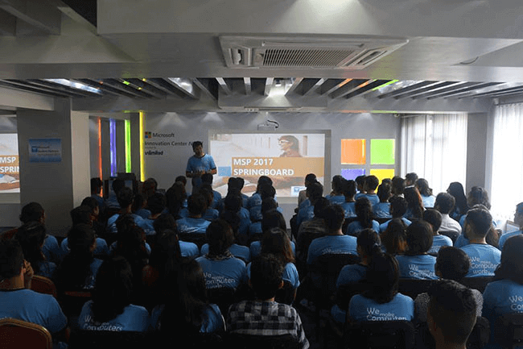
Mr. Allen, welcomed all of us especially the people from Chitwan and Pokhara, then the program started with National Anthem.
Then after, we had our first mentor on the board to tell more about Photography. But actually, we thought he was tween brother of Allen sir (What a joke ?)
Photography : A Miracle of Art & Science – Alok S. Tuladhar
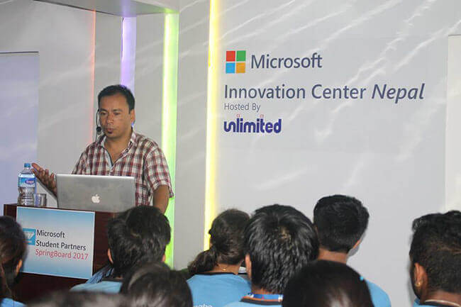
We were is asked, What does Photography means to us ? We told it was creativeness, work of timing & light … Mr. Tuladhar reminds us, Photography is an Art.
- Bring back your character to life
- Add emotion and feeling fo photographs
- Running cloud made with timelapse
- More discussion about Photography
Have Strong Network with your Community – MSP Almuni
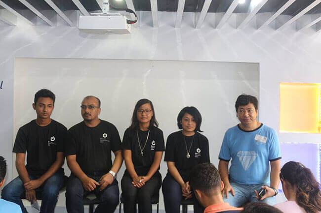
– Try to interact more with people – Learning is imperative & never ending phenomenon – Teach others to achieve more
Dedication, Volunteer, Knowledge sharing and Networking are the 4 mantras that will Keep you apart from rest.
Ever Explored the Famous Failures that Became Success ?
ALBERT EINSTEIN didn’t speak until age four and didn’t read until age seven. His teachers labeled him “slow” and “mentally handicapped.” But Einstein just had a different way of thinking. He later won the Nobel prize in physics.
WALT DISNEY was fired by a newspaper editor because he “lacked imagination and had no good ideas.” Several more of his businesses failed before the premiere of his movie Snow White. Today, most childhoods wouldn’t be the same without his ideas.
WINSTON CHURCHILL failed the sixth grade. He was defeated in every public office role he ran for. Then he became the British prime minister at the age of 62.
THOMAS EDISON’s teachers told him he was “too stupid to learn anything.” Edison also famously invented 1,000 light bulbs before creating one that worked
If a drop of water falls in a lake, there is no identity. But if it falls on a leaf, it shines. We need to choose the best place where we can shine.
- Destiny is not created until we take steps.
- Secret of Joy in work is contained in one word – Excellence
- To know how to do something well is to enjoy it
What Does a Person Really Need to Succeed ?
I think everyone can answer to this, but few provides the worthy answers. Everybody talks about passion etc but, we have never thinked what we are passionate about, where it really comes from or how it grows stronger ? Before that let’s see the John Von Achan’s awesome video .
These four things will always you to success.
- Dedication
- Planning
- Passion
- Hardwork
Enjoy your work at the end of day and utilize resources for maximum result.
Kripa Unplugged Started Its Journey from Roof-Top Set
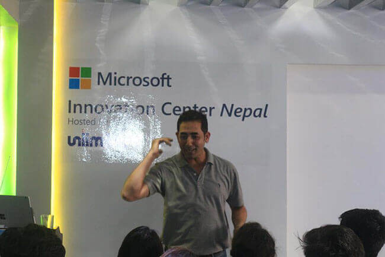 Aman Pratap Adhikari introduced himself as the director of Kripa Unplugged, a famous music series in acoustic set. During this, he told us that the earliest season of Kripa Unplugged was casted in Roof-top.
Discussion of TV Shows, Film/Documentary Making
– Watch Blair Witch Project – Make Film Relevant to Era – We need lots of Investigation – Everything is scripted before casted in camera – Do your basics right, everything comes all right – Same story repeats , but presentation is delivered differently. – Big task Big opportunities
Make Presentation That Rocks – Prashant Manandhar
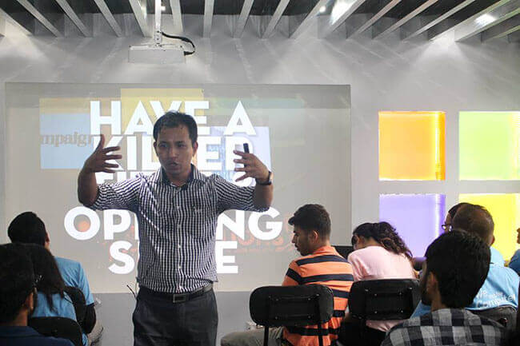 Prashant Manadhar talked about the core understanding of how presentation should be made and what are the points that you should have in your checklist.
Slide Headline – Have a Killer Title and Opening Slide Content – Keep the things Simple in precised manner Design – Set the graphics and theme Presentation – Tell what you are going to do and storify it to hook the audience
Content May be KING, but Context is Everything
If a picture worth 1000 words, a metaphor worth 1000 pictures.
Blogging is a Kind of Fun – Nairisha Manandhar
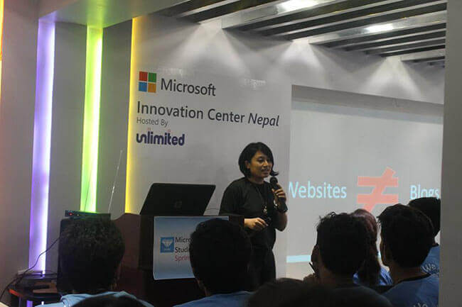
What is Blog ?
– Simply, a post where your contents are stored in systematic order in Web.
Why Should You Start Blogging ?
– Set yourself apart from others
– Show your audience who you really are and what you’re all about
– Demostrate your expertise and become thought leader in the industry
– One of the quality that every MSPs should bear
Types of Blogs
1. Narrative – This blog is about MSP Springboard Event
2. Descriptive – I was in the springboard session and didn’t even took photo with Allen … Ya, that was kind of bad experience.
3. Technical Blog – Tutorials, reviews, guides about technical part.
MSP Springboard Event – Day 2
Springboard Day 2 was even more exciting, motivating, humourous, energizing well enough to welcome our upcoming Speakers.
Set Milestone to Achieve and Reward Yourself – MSPs Almuni
We had our former MSPs as Panelist where they told their success stories and how they strived to achieve success.
This has led us to face lots of challenges like :
– Make impacts on other students
– Be more friendly and social
– Build strong student community
– Priority and Time Management
– Maintain Consistency
– Make events more interesting
– Set Milestone to Achieve
Plans May Change, But Goals Don’t – Allen B. Tuladhar
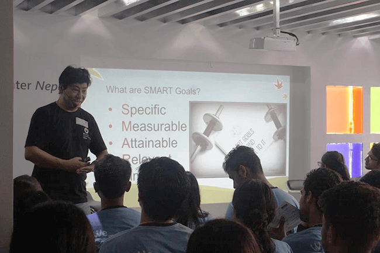
- Specific – Have burning desire to do something
- Measurable – Set your initial and end goals for measurement
- Attainable – Be realistic with your goals, make it achievable
- Relevant – Make your future goals relevant to context your are dealing
- Timebound – Limit your goals in the certain timebound
The MIC Band took the Session to Next Level
Attendees of Springboard were the first one to see official music video ,“Prakash” of The MIC Band, also they performed the live version (Bonus).
Introducing Office 365 – Bibek Chaudhary
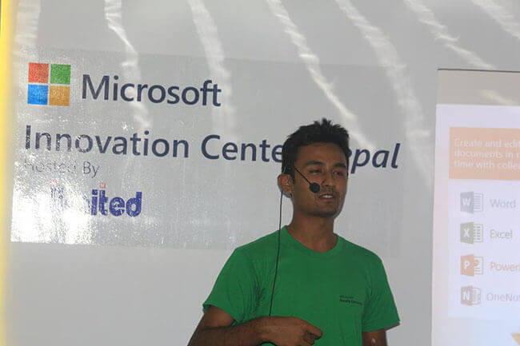
Details on Cloud Computing – Ravi Mandal
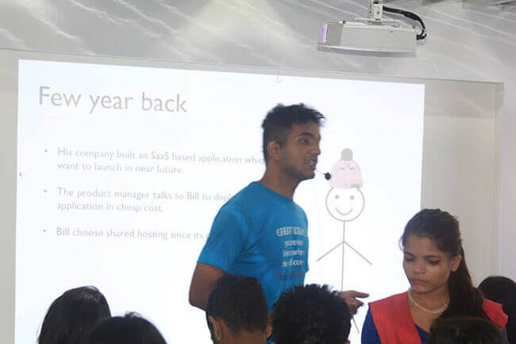
Windows 10 Anniversary Highlights – Pradeep Kandel
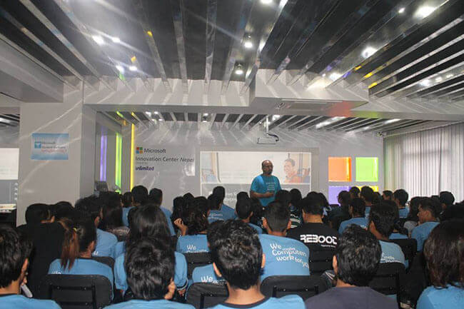
Mr. Pradeep demonstrated us cool features of Windows 10 through his presentation slide.
Talk with MICNIC College Principals
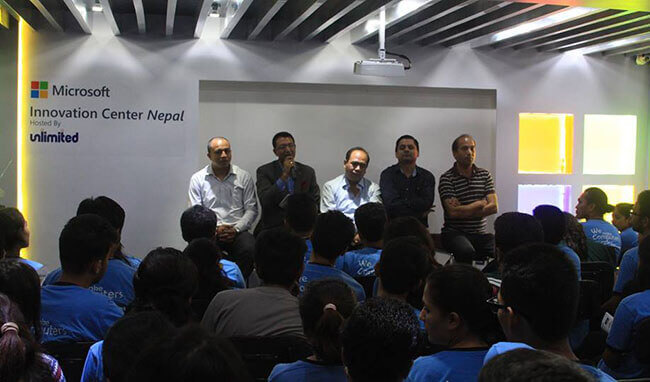
We had the Principals from 4 different MICNIC college (ISMT Collge, Prime College, Kathmandu Bernhardt College) . As representative of college, MSPs got different challenges to face. Also, we discuss alot in how to eradicate the gap between the Industry and Academy.
Problems that MSPs are facing in their respetive colleges - Approval to conduct Tech Events within College - No or Inactive IT Community - No academic calendar listing Tech events - Lack of support/motivation from College Administration
Possible Solutions : - Request your college management (Highlight the both students and college benefits) - Build strong network within college (Form IT Club, IT community of college in facebook) - Cooperate with the IT Community - Tie-up with the Class representative of your college - Maintain good relation with College administration
Don’t Wait Others, Make it Happen Yourself
After all, the two day MSP Springboard event was just the beggining of our journey with motto Transforming from Catterpillar to Butterfly. The Speaker and Panelist did their great job, motivating MSPs through out the session. We also took the best opportunities to have our question answered.
Finally, in short description the MSP 2017 Springboard was feature package of Awesomeness, Motivation, filled with Inspiration, Knowledge Sharing, Great Experience, also aspiring MSPs to be the Tech leaders.
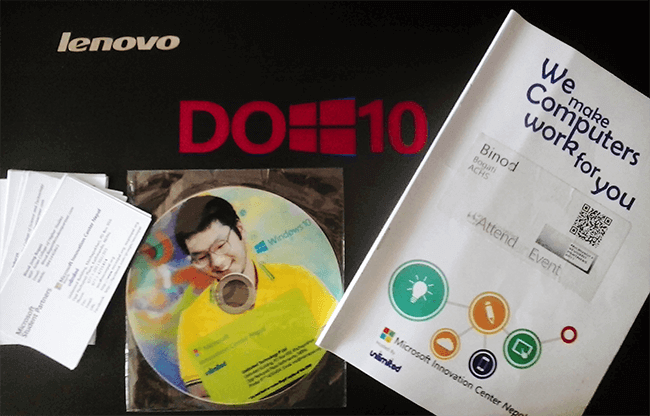